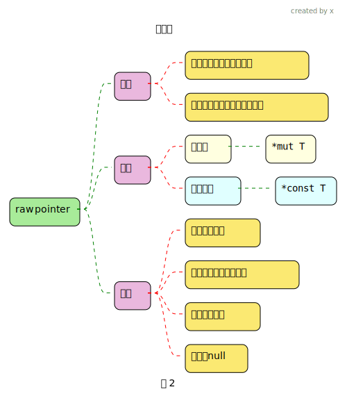

rust unsafe
1 为什么需要以及它的作用
为什么需要?
- Rust 是一种系统编程语言, 强调内存安全、数据竞争自由和并发性. 尽管 Rust 提供了许多机制来保证内存安全, 但有时程序员需要执行一些操作,这些操作无法通过 Rust 的安全抽象来表示, 或者执行起来效率较低.
- 在这种情况下, Rust 提供了 unsafe 块或 unsafe 函数
- unsafe 代码表明 可能有不安全的操作, 因为里面编写的代码 ,一些检查可能是不执行的, 需要程序员自己注意代码的编写, 写的没问题 ,那实际上就是安全的, 换句话说如果没写unsafe 编译器会报错, 是为了提醒你 这块代码 可能有不安全的操作, 需要你注意代码的编写
- 根据上面的说法, 显然 unsafe代码块里的 代码 本来会做的检查还是会做
2 裸指针
fn main() {
struct Two {
first: i8,
second: i8,
}
let mut num = 777i32;
// 0000 0011 0000 1001
println!("num的二进制表示: {:b}", num);
// 先将地址 &num 转换为 指针 *const i32 ,
// 然后将它转换为 *const i8, 表示现在是以一个字节的方式读取这块内存地址
let r1 = &num as *const i32 as *const i8;
// 步进1后的指针, 这里就表示该指针指向 r1 所在地址下一个字节的内存
// 这些操作无需 unsafe 包裹
let f = r1.wrapping_add(1);
// 转换为结构体的方式来读取这块内存
let r2 = &num as *const i32 as *const Two;
// 转换为以数组的方式来读写这块内存
let r3 = &mut num as *mut i32 as *mut [i8; 2];
// 在解引用操作的时候,才需要unsafe包裹
unsafe {
println!("num第一个字节==> r1 : {}", *r1); // 9
println!("num第二个字节==> r1 : {}", *f); // 3
println!("num第一个字节==> r2 : {:?}", (*r2).first); // 9
println!("num第二个字节==> r2 : {}", (*r2).second); // 3
println!("转换为数组 r3,num第一个字节:{}-num第二个字节:{}", (*r3)[0], (*r3)[1]);
(*r3)[0] = 11; // 将第一个字节修改为11
println!("{num}");
}
}fn main() {
let b;
{
let a = "hello".to_string();
b = &a as *const String;
} // 编译器没有报错, 说明忽略了借用检查
let c = b.wrapping_add(1);
unsafe {
let d = b as *const [u64; 3];
println!("{}-0x{:x}-{}", (*d)[0], (*d)[1], (*d)[2])
}
// 可以指向不合理的内存地址, 这里也说明了, 它不会像智能指针那样自动清理, 如果清理了, 那还得了
let address = 0x012345usize;
let r = address as *const i32;
// 空指针, 不指向任何有效的i32值
let p = std::ptr::null::<i32>();
println!("p 是否为空指针 {}", p.is_null());
}fn main() {
let f;
{
let b = Box::new(5);
println!("{:p}", b); // 堆上的5的地址
println!("{:p}", &b); // 栈上b变量的地址
// 将 b 转换为 *mut T 可变裸指针
// c 的类型是 这里是 *mut i32
// b 被move 掉了,但是这个c指向了 b指向的内存,且c没有这块内存的所有权
let c = Box::into_raw(b);
println!("{:p}", c); // 堆上5的地址
unsafe {
println!("{}", *c);
*c = 23;
f = &*c;
// Box::from_raw 重新获取所有权,这样离开作用域后, 回收了
// 取消注释后, *f 的值就不对了, 因为堆上的数据5被回收了
// let s = Box::from_raw(c);
}
}// 由于没有 变量对 堆上的数据5 拥有所有权, 所以没 回收
println!("f=={}", *f);
}需要 cargo add libc
fn main() {
// 使用 libc 库中的 malloc 函数分配内存
let raw_ptr = unsafe { libc::malloc(std::mem::size_of::<i32>() as libc::size_t) as *mut i32 };
println!(
"raw_ptr在栈上分配的地址: {:p}\nraw_ptr申请的堆地址: {:p}",
&raw_ptr,
unsafe { &*raw_ptr }
);
let b = Box::new(11);
println!("b指向的堆地址: {:p}", b);
if raw_ptr.is_null() {
eprintln!("Memory allocation failed");
return;
}
// 安全地使用裸指针
unsafe {
// 初始化内存
*raw_ptr = 42;
// 打印内存中的值
println!("Value at raw pointer: {}", *raw_ptr);
}
// 注意：这里没有释放内存，这将导致内存泄漏
// 正确的做法应该是调用 libc::free 来释放内存
unsafe {
libc::free(raw_ptr as *mut libc::c_void);
println!("free 后 raw_ptr指向的值: {}", *raw_ptr); // 0
}
}3 修改可变静态变量
4 unsafe fn
Tip
unsafe函数或方法: 就是在定义前面加上unsafe关键字.
调用内部实现有unsafe代码块的函数或方法,不需要unsafe包裹
5 unsafe trait, unsafe impl
6 extern 调用外部函数(FFI)
Tip
- FFI: Foreign Function Interface 外部函数接口, 可以让一种编程语言定义函数,然后其他语言可以调用
6.1 rust 调用C
6.2 c语言调用rust
#[no_mangle] 关于名称混淆(Name Mangling)
- 名称混淆是编译器的一种行为,它会根据函数的参数类型、返回类型、函数名、命名空间等信息生成一个唯一的名称
- 这个过程确保即使在同一个程序中存在多个同名但参数类型不同的函数时,编译后的二进制文件中也不会出现命名冲突
- #[no_mangle] 的作用
- 当你使用 #[no_mangle] 属性时,Rust 编译器会保留函数的原始名称,而不是生成一个混淆后的名称
- 当你需要从其他语言（如 C 或 C++）调用 Rust 函数时, 才可以通过这个函数名找到对应的函数
- 所以你在rust中定义的rust函数必须全局唯一的函数名